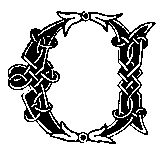
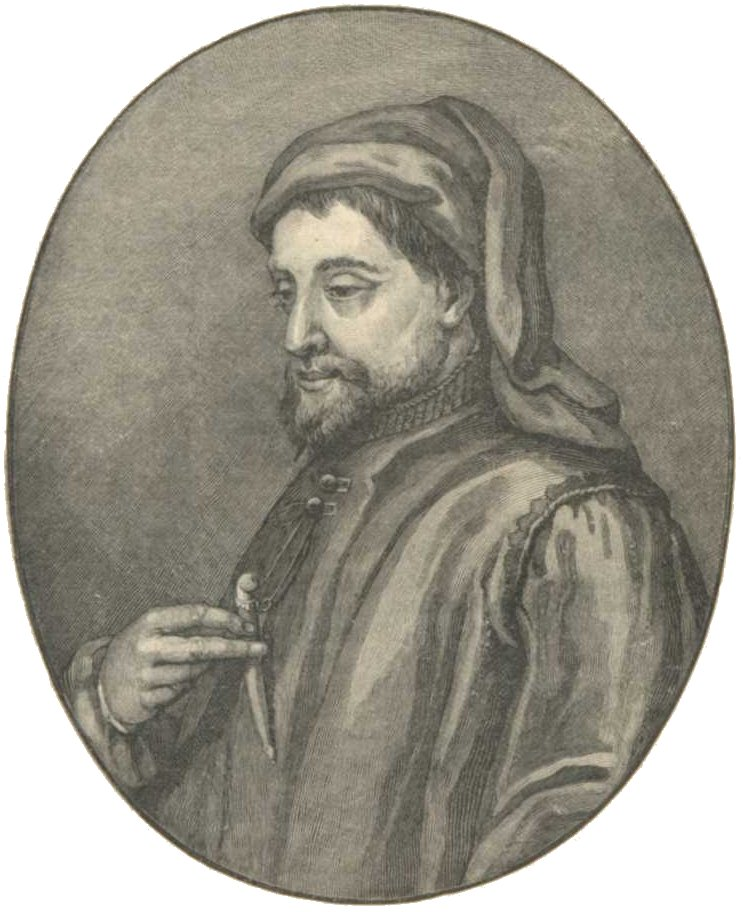

haucer
Sometimes considered the father of modern English literature, Chaucer
is best known for his unfinished frame narrative, Canterbury Tales. He wrote in a
meter similar to iambic pentameter and was one of the first writers to
work in the vernacular English
instead of Latin or Anglo-Norman French.

"Amor vincit omnia."